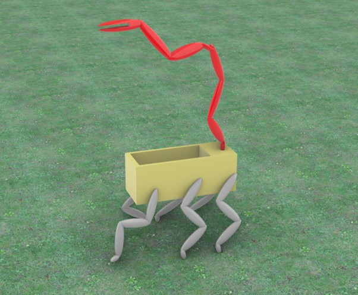

This project is about making an agricultural harvester robot. There is a lack of seasonal workers in rural areas all over Australia right now and many farmers are struggling to harvest all their fruit in time. With most fruits and vegetables there is only a short window of time when it is possible to harvest them. That requires seasonal workers who are hard to find these days. It is not uncommon that large quantities of produce will be left on fields as they over ripen with the hot weather. With global food shortages the efficiency of local farms needs to be improved.
With the developments in deep learning and AI building such smart robots becomes more and more feasible. Previously with robots there was a problem, every move needed to be programmed. Now it is possible to let robots “learn” and make their own decisions through set parameters. In this day and age automating harvesting is the next logical step
The harvest robot needs to be agile and cause minimum harm to the ground surface. Problem with modern tractors is that heavy machines compact the soil too much between plants and that way causing loss of usable land on farms. This project idea is about a robot that looks like a scorpion, six legs and one picking arm at the back. Using python and image recognition technologies it is possible to detect produce, measure the ripeness and harvest, using only one robot.
Harvester bot is fully charged in the station. Farmer inspects fruits and tells when to activate harvest robots. Once activated robots will start roaming on the set field, scanning trees for fruits. Once fruit that has ripened to acceptable values robot harvests the fruit and places in the basket. Once basket is full, the robots will transport produce to central transport robot that weighs and delivers produce to processing shed.

back to main page